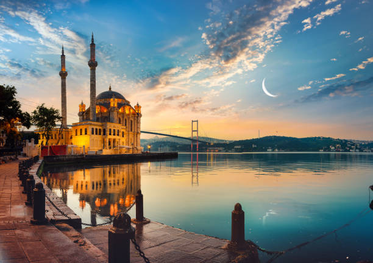
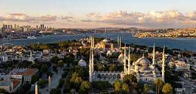
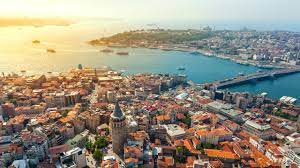
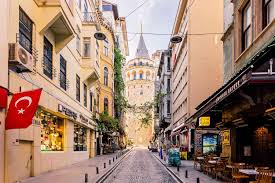
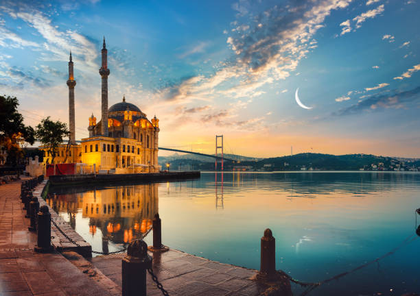
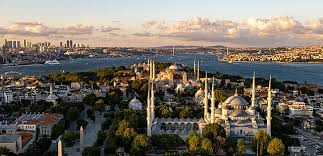
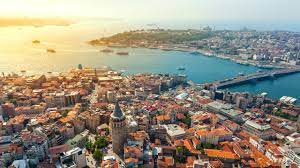
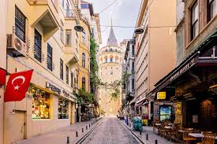

.jpg)
.jpg)
.jpg) 







Istanbul — Turkiyadagi eng katta shahar, Istanbul Turkiyaning 81 viloyatidan biridir. Aholisi 16 214 000 kishi (2022-yil). Istanbul Marmar (Marmara) dengizi va Bosfor boʻgʻozining past-baland sohillarida joylashgan. Boʻgʻoz shaharni ikkiga — Osiyo va Yevropa qismiga boʻlib turadi. Yevropa qismi Oltin Shox ( Haliç ) qoʻltigʻi sohillarida joylashgan. 1970—72 yillarda Bosfor boʻgʻoziga Istanbulning har ikkala qismini birlashtiradigan koʻprik qurilgan. Iqlimi subtropik oʻrta dengiz iqdimi, yanvarning oʻrtacha harorati 5,2 °C, avgustniki 23,6 °C, oʻrtacha yillik yogʻin 633 mm.[3]Tarixi.Istanbulga mil. av. 660 yilda Vizantii shahri sifatida asos solingan. 330-yildan Rim imperatori Konstantin nomi bilan atalgan[4][5]. 395-yilgacha Rim imperiyasi tarkibida, 395—1453-yillar Vizantiya poytaxti. 1453-yilda Istanbul turklar tasarrufiga oʻtgan va Usmonli turklar saltanatining poytaxtiga aylantirilgan; oʻsha vaqtdan shahar Istanbul deb atala boshladi. Usmonli turklar saltanatining kuchsizlanganidan foydalanib, 18-asr oxiridan Yevropa davlatlari shaharni va boʻgʻozlarnivbosib olishga harakat qilib keldilar. Turkiyaning birinchi jahon urushida harbiy qudrati kamaygach, Istanbulni Antanta davlatlarining qurolli kuchlari bosib oldi. 1923-yilda shahar bosqinchilardan ozod qilindi va oʻsha yilning oktabrda Turkiya poytaxti Istanbuldan Anqaraga koʻchirildi.Sanoati .Shahar qulay geografik oʻrinda joylashgan. Istanbul — mamlakatning muhim sanoat, savdo-moliya va madaniyat markazi. Mamlakat sanoatining 60% i Istanbulda joylashgan. Toʻqimachilik, oziq-ovqat, metallsozlik, yogʻochsozlik, elektrotexnika, kimyo, mashinasozlik, sement, koʻn poyabzal, tikuvchilik, harbiy va boshqa sanoat korxonalari, milliy va’chet el savdo firmalari, kompaniyalar, banklar, birjalar bor. Hunarmandchilik (yogʻoch, metall, teridan turli buyumlar yasaladi) rivojlangan. Turkiyadagi barcha savdo operatsiyalarining yarmi Istanbulga toʻgʻri keladi.Transport yoʻllari Istanbul — dengiz, quruqlik va havo yoʻllarining tuguni. Turkiyaning asosiy porti. Bu yerdan xalqaro kema yoʻllari oʻtgan. Temir yoʻl orqali Yevropadagi koʻpgina poytaxt shaharlar va mamlakatning ichki rayonlari bilan bogʻlangan. Bosfor boʻgʻozi orqali Istanbulning har ikki tomoniga yoʻlovchilar tashuvchi kemalar va yuk paromlari oʻtib turadi. Xalqaro aeroport bor.Ijtimoiy soha Shaharni, ayniqsa, uning qadimgi qismini 500 ga yaqin masjid, shuningdek, ibodatxonalar, saroylar, favvoralar va oʻrta asrlarda qurilgan hamda yangi davrga oid meʼmoriy inshootlar (mudofaa devorlari, ippodrom, saroylar, Ayo Sofiya ibodatxonasi, oʻrta asr masjidlari va 15—16-asr saroy binolari) bezab turadi. Shaharga turistlar koʻp keladi. 3 ta universitet, institutlar, Badiiy akademiya, Iqtisodiyot va savdo akademiyasi, muzeylar, kutubxona, opera va boshqa teatrlar bor.[6]
Design by Ahrorbek